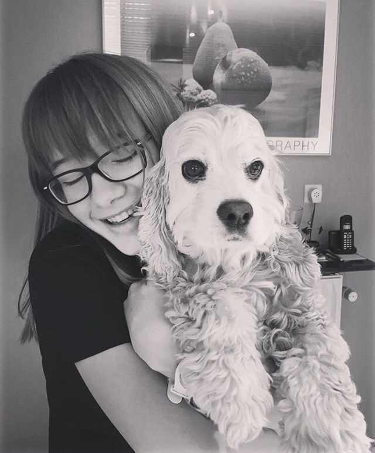
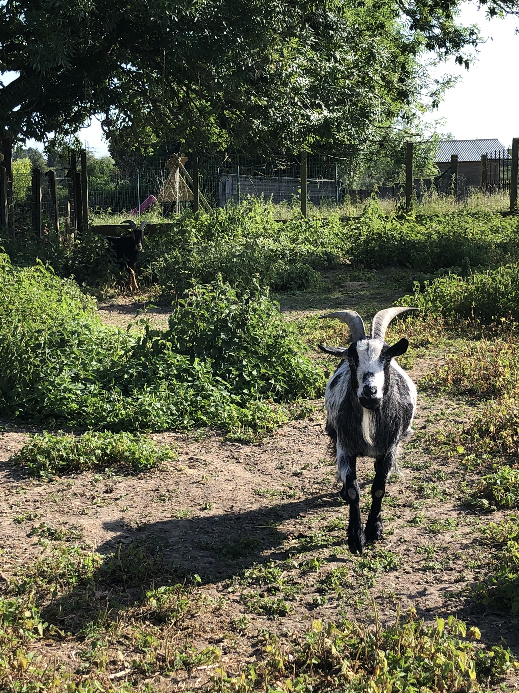

De hond wordt getraind om bepaalde kuntsjes te doen, maar ook om je hond beter te kunnen vertrouwen in bepaalde situaties.
Het belangrijkste is dat je aandacht besteed en regelmatig met je hond traint zodat hij of zij de commando's weet en ook kan uitvoeren zonder beloningen.

Met wie train ik?
Mijn vier jarige Engelse cockerspaniël Fieke is hierbij mijn partner. Ze is ook al vier jaar bij ons. Ik ben met haar beginnen trainen in de zomer van 2018.
Ze heeft het examen voor naar de B-klasse te gaan gehaald, maar doordat ze zeer moeilijk wil apporteren lukt het niet om verder te gaan.
Fieke kan heel goed blijven en dat is echt haar specialiteit. Aan de voet lopen thuis lukt perfect, maar op straat zijn er te veel prikkels ¦ Daardoor is dat zeer moeilijk en is de aandacht er niet altijd bij.

Wie ben ik?
Mijn naam is Youna Noynaert. Ik ben een achttienjarige dierenliefhebber! Ik ben opgegroeid met dieren rondom mij. Ik heb geiten, kippen, eenden en ganzen. Vroeger had ik ook konijnen, maar die zijn helaas overleden. Mijn twee geitjes Spikkel en Woefke zie je op de foto!
Jarenlang wou ik eigenlijk dierenarts worden, maar uiteindelijk ben ik toch van gedachten veranderd!
Hoe te belonen?
Veel mensen denken dat een beloningen snoepjes zijn, maar dit is niet de enige.
Je hond aandacht geven en met je intonatie werken kan ook wonderen doen!
Welke trucjes kan je aanleren?
Op internet kan je heel veel ideeën vinden. Hier vind je een site waarop je enkele basis commando's vindt, maar ook wel meer uitdagendere!
Welke basistrucjes kent Fieke?
Naam truc
Waarvoor is dit handig?
Hoe ik het heb aangepakt
Zit
Je laat je hond zitten, zodat hij/zij tot rust kan komen.
Fieke heeft dit geleerd door haar in een hoekje te laten staan. Dan een snoepje over de neus naar het hoofd toe. Je hond moet dus naar boven kijken. Uiteindelijk gaat je hond zitten omdat hij/zijniet verder naar achteren kan door de muren.
Liggen
Dit is ook handig om je hond tot rust te laten komen.
Eerst moet je je hond wel al op commando laten liggen. Eens je hond kan zitten, is dit echt gemakkelijk. Wanneer je hond zit, moet je met een snoepje voor de neus van je hond gaan en dan op de grond houden. Je hond zal normaal ook volgen.
Pootje
Nadien kan je je hond een snoepje geven wanneer je vertrekt.
Dit commando kan je aanleren door snoepjes in je hand te houden en dan gaat je hond krabben op je hand. Dan moet je belonen!
Meer basiscommando's vind je op het internet!
Hoe ziet een hondenschool eruit?
In elke hondenschool zijn de klassen een beetje anders, in grote lijnen zijn ze wel dezelfde. In deze lijst vind je een korte beschrijving van de verschillende klassen en enkele begrippen .
Hondenschool
Enkele keren per week is er les. Hierin ga je dus met je hond trainen in groep. Je trainer geeft je dan ook tips voor te slagen.
Lesgever
Dit is iemand die een speciaal brevet heeft om les te geven. Zij gaan je helpen!
Examen
Om de zoveel tijd kan je een examen afleggen met je hond. Hierdoor kan je doorgaan naar de volgende klas!
Puppyklas
In de puppyklas wordt er eigenlijk niets aangeleerd. Het belangrijkste is gewenning met andere honden.
A-klasse
Na een bepaalde leeftijd, gemiddeld 10 maanden, kan je hond doorstromen naar deze klasse. Hierin worden de basiscommando's aangeleerd, zoals blijven, apporteren en volgen aan de lijn.
B-klasse
In de B-klasse wordt er verder geoefend op de commando's van de A-klasse
C-klasse
In de C-klasse wordt er niet meer getraind met een leiband, maar altijd los.
D-klasse
In deze klasse wordt er verder getraind op de aangeleerde commando's.